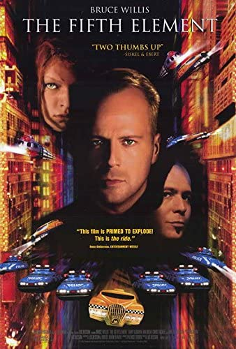

The Fith Element
I have watched this movie more times than I can count. The cast of consists of some heavy hitter actors and actresses from back in the 90's.Some of them consisting of, Bruce Willis, Milla Jovovich and Chris Tucker. It's an action packed Syfy adventure complete with Aliens, explosions, and some amazing graphics for its time. Of course, the film would not be complete without adding a little bit of comedic relief from Chirs and the sweet love story that forms between Bruce Willis and Milla Jovovich’s characters. I highly recommend watching the movie at least once. If you enjoy it like myself, you might find yourself watching over and over.
Gladiator
Russell Crowe stars in this academy award wining film. The story is based loosely in the Roman Empire days. The main character played by Russell Crowe ends up becoming a gladiator set out for revenge. It has action, suspense and even moments of mystery. Don’t forget your tissues because this one really pulls at the heart strings.
Scott Pilgrim vs The World
Now this movie is very close to my heart. I openly admit I am a dork/ geek of epic proportions so this one is for people like me. This movie is based off a Manga series that originated in Japan. It is fun, quirky, and silly. If you are a fan of video games, comics and things that are outside of the norm, I think you will love finding all the small references back to those things in this movie. I highly recommend getting a few friends together, getting your favorite snacks and enjoying this one.
Why do movies mean so much to me?
- My dad has always had a special love for movies and ever sense I was a little girl we would watch them together.
- They're an escape from the world around me. Whenever I get sad, scared or sick movies have been a form of comfort for me.
- I love stories and movies are basically stories that have been brought to life.